From AI to Google Sites.
For a simple self-contained tool, you may be able to paste its code directly into a Google Sites full-page embed — no separate web host required.
Tell your AI partner your publishing method before it writes code. Ask for one self-contained HTML/CSS/JavaScript block specifically designed for Full page embed → Embed code.
Follow along: publish your own tool
These screenshots show the Google Sites editor. Your tool will look different — and that’s exactly the point. You’re publishing your own creation.
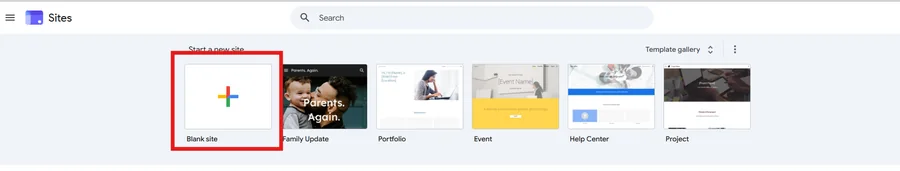
Open Pages and add a page
Choose Pages in the right sidebar, then click the + button.
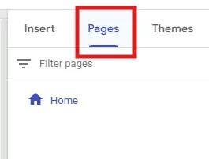
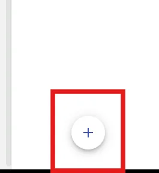
Choose Full page embed
In the + menu, choose Full page embed, not a regular page.
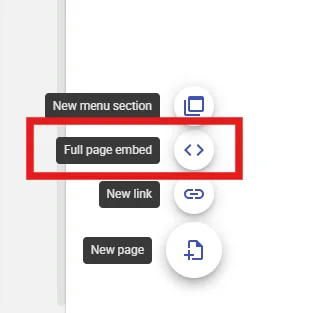
Name your app page
Enter a name for your tool and click Done.
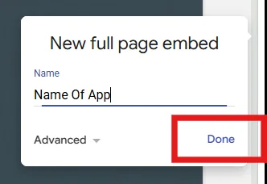
Add an embed
On the new page, click Add embed.
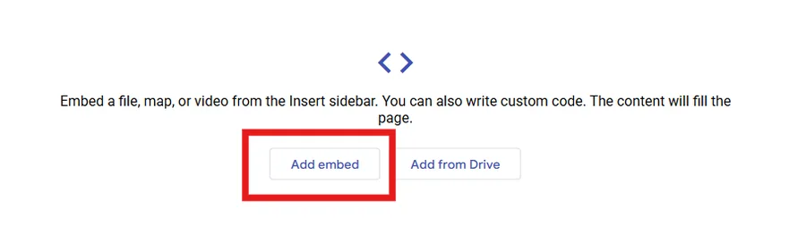
Paste your app’s code
Select Embed code (not “By URL”). Paste the complete HTML/CSS/JavaScript your AI partner provided. Click Next.
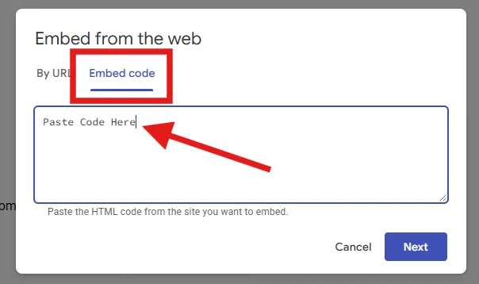
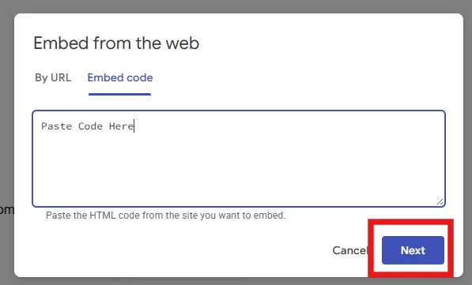
Insert the tool
Check the preview and click Insert. If it doesn’t appear as expected, return to your AI conversation and describe what happened.
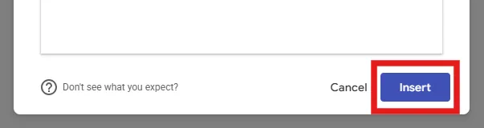
Make your app the homepage
Return to Pages. Open the three-dot menu beside your app page and choose Make homepage. This makes the app the first thing visitors see.
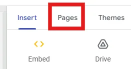
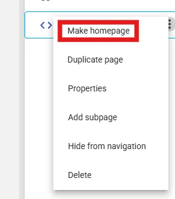
Delete the original Home page (optional)
Once your app has become the homepage, you can delete the now-unnecessary original Home page. Take care to delete the old page, not your app.
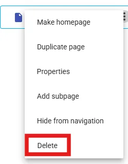
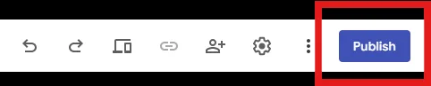
Publish your website
Click Publish, choose an available web address, and confirm publishing. Verify that your site’s sharing settings allow your intended audience to view it.
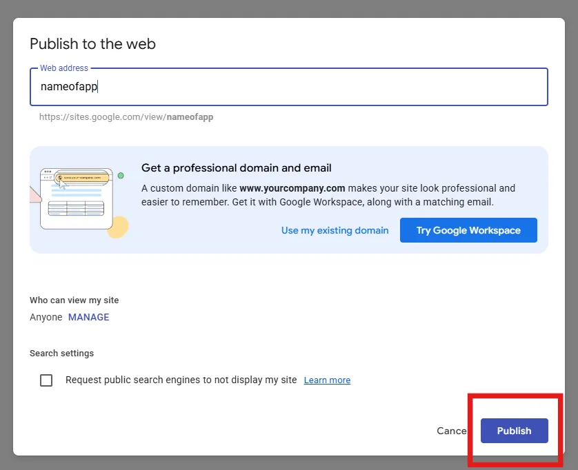
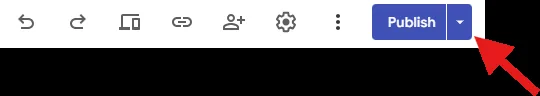
Open your app on any device. After publishing, use the published site’s web address to visit your app in a browser. Copy the URL, email it to yourself, and open it on your phone. Bookmark it or add it to your phone’s home screen for quick access. Because you made your app page the homepage, the link opens straight into your tool.
What direct embedding can — and cannot — do
Direct embeds work best for simple standalone tools. Features such as shared live data, user accounts, or synchronized scores may require an external service. Browser storage may be limited or cleared in embedded environments; test refresh behavior rather than assuming information will persist.
If something doesn't work
Return to your AI conversation, describe exactly what happened, and ask for a targeted fix that preserves everything already working.